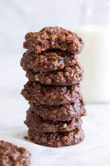

No Bake Cookies

Easy No Bake Cookies
No-Bake Cookies made with instant chocolate milk mix (not baking cocoa).
Ingredients
- 2 cups white sugar
- 1/2 tsp salt
- 1/2 cup butter
- 1/2 cup milk
- 1/2 cup peanut butter
- 3 cups rolled oats
- 1 tsp vanilla extract
- 1/2 cup powdered chocolate drink mix
Directions
- In a medium saucepan, over medium heat, combine the sugar, salt, butter and milk.
- Bring to a boil, then boil for 1 full minute.
- Remove from heat and stir in the peanut butter, oats, vanilla and chocolate drink mix
- Drop by spoonfuls onto waxed paper.
- Let stand until completely cool.